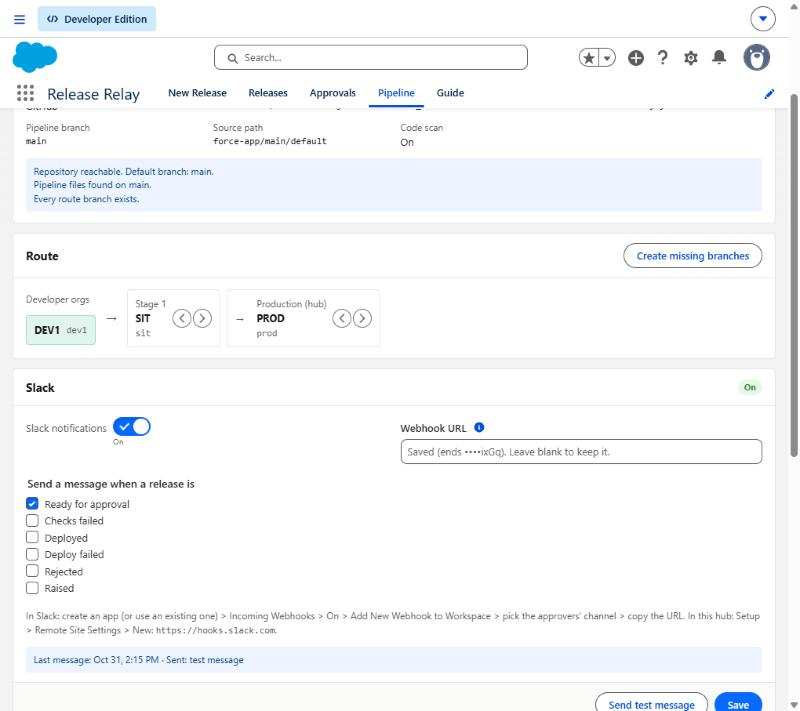
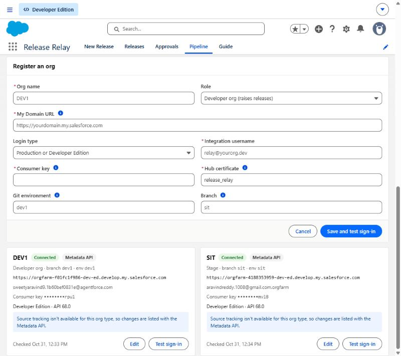
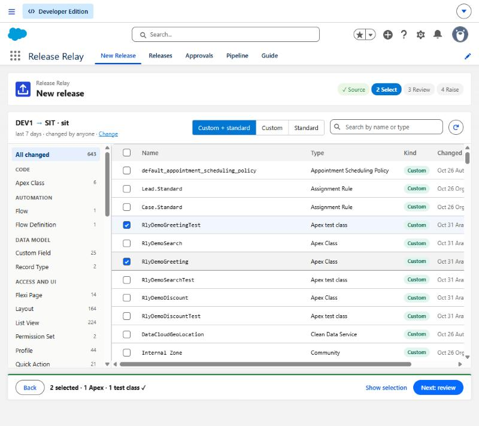
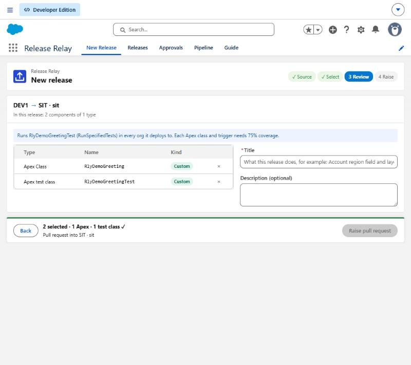
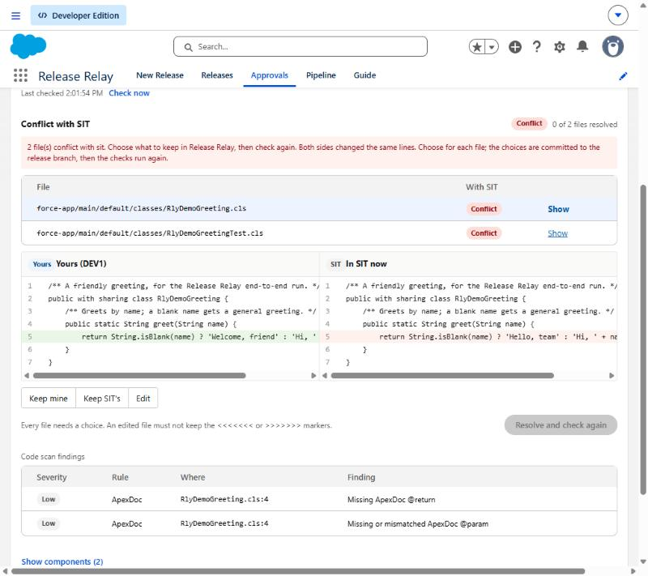
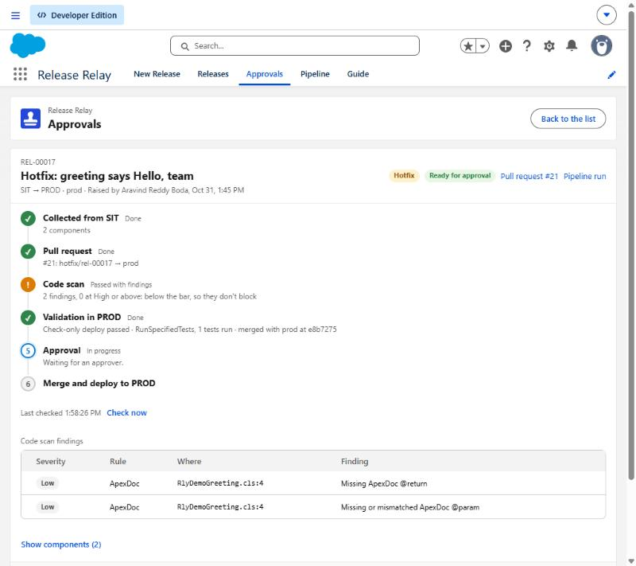

Release Relay
Start here
How it works
Set up, step by step
Repository files
Daily use
Raise a release (developer)
Approve (approver)
Conflicts between orgs
Hotfix from SIT
Slack
Statuses
Reference
Permission sets
Troubleshooting

Pipeline tab: Git connection shows Connected and lists what it checked.

Register an org: the consumer key is saved encrypted and shown as ••••.
Pipeline → Route shows DEV1 → SIT → PROD. Use the arrows to reorder stages; Create missing branches makes any branch Git doesn't have yet.
Developer → RLY_Developer · Approver → RLY_Approver · Admin → RLY_Admin (includes Hotfix).
New Release → pick DEV1 → select a class and its test → Review → Raise. Watch it on the release page.

Select: the bar shows the test rule before you can go on.
release-relay-demo/
├─ .github/workflows/
│ └─ release-relay.yml ← the pipeline
├─ scripts/
│ └─ release-relay.js ← every step
├─ force-app/main/default/ ← the metadata
├─ .relay-inbox/ ← hub drops zips here
└─ sfdx-project.json
branches: main · dev1 · sit · prod
feature/rel-xxxxx · hotfix/rel-xxxxx
release-relay-results ← step results
| File or branch | What it's for |
|---|---|
| release-relay.yml | Starts the jobs: raise, scan, validate, merge, deploy. Modes: hub, check, resolve, merge. |
| release-relay.js | The steps themselves: convert the hub's zip, open the PR, merge the target, run tests, deploy, update branches. |
| .relay-inbox/ | Where the hub commits a release's zip and your conflict choices. The pipeline removes them after use. |
| release-relay-results | One folder per release with scan.json, validate.json, merge.json, deploy.json. The hub reads these. |
| feature/rel-xxxxx | One branch per release, from the developer org's branch. |

Review: what goes in, and which tests run.

Conflict: your version and SIT's side by side.

Approval: scan findings and the decision.